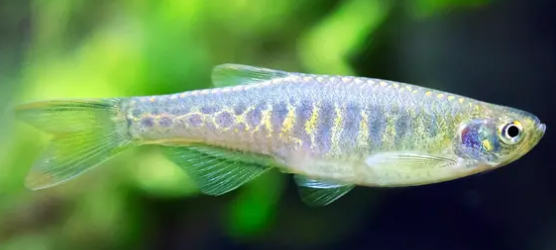
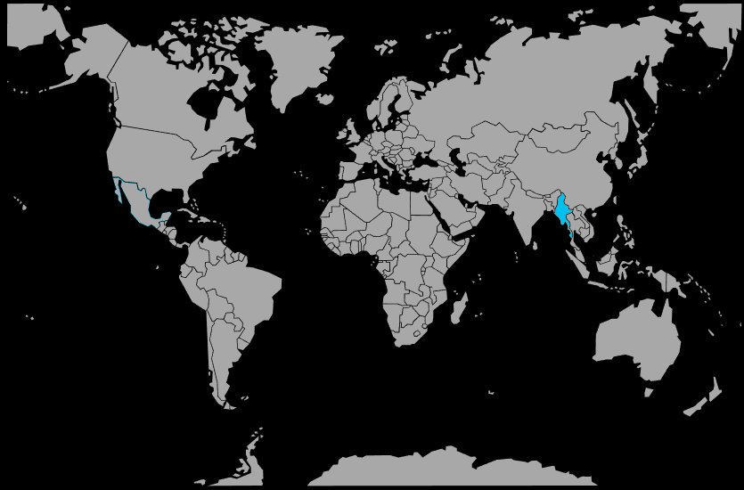

Systématique
- Ordre : Cypriniformes
- Famille : Cyprinidae
- Genre : Danio
- Espèce : Danio aesculapii

Danio aesculapii, parfois appelé danio panthère, est un petit cyprinidé mesurant environ 3 cm, au corps élancé orné de taches sombres irrégulières sur fond brun à doré.
Cette livrée mouchetée le distingue des danios rayés plus connus, tout en conservant une silhouette typique de danio, avec un pédoncule caudal fin et une nage rapide en pleine eau.
Danio aesculapii est un poisson grégaire et vif qui vit en banc serré, occupant principalement le milieu et la partie supérieure de la colonne d’eau; il doit toujours être maintenu en groupe d’au moins 8 à 10 individus.
L’espèce est globalement paisible mais très active, ce qui peut stresser des poissons plus calmes ou à longues nageoires si le volume est trop réduit; un aquarium bien allongé, avec du courant et des zones de replis, convient mieux.
Il apprécie une eau fraîche à tempérée, claire et bien oxygénée, rappelant les petits cours d’eau de piémont de son aire de répartition.
Mode : pondeur libre; la femelle dissémine ses œufs parmi les galets, le gravier et les plantes, où le mâle les féconde immédiatement, sans protection particulière.
En aquarium, la reproduction s’envisage dans un bac spécifique avec substrat à gros grains ou grille de fond pour éviter la prédation des œufs par les adultes, sur un schéma similaire à celui de Danio rerio.
Les alevins sont minuscules et nécessitent une nourriture de très petite taille (infusoires, micro‑nourriture, puis nauplies d’artémias) dès la résorption du sac vitellin.
Dimorphisme sexuel : les femelles adultes sont généralement un peu plus grandes et plus rebondies que les mâles, surtout vues de dessus, tandis que les mâles sont plus fins et peuvent présenter des contrastes légèrement plus marqués.
Espérance de vie : en aquarium, Danio aesculapii vit en général 3 à 5 ans si l’eau reste fraîche, propre, bien oxygénée et si la vie en banc est respectée.
L’espèce est originaire de petits cours d’eau clairs à faible profondeur, avec un courant léger à modéré, un fond de galets, de pierres et de graviers, et une végétation aquatique limitée.
Ces milieux présentent souvent des berges ombragées par la végétation rivulaire, ce qui crée des zones de lumière diffuse où le banc peut se déplacer et se nourrir à proximité du substrat et de la surface.
Répartition

Origine naturelle :
- Sud‑ouest du Myanmar (Birmanie), dans quelques systèmes fluviaux restreints.
L’espèce est considérée comme à distribution limitée, ce qui rend important de ne pas relâcher de spécimens en dehors de son aire d’origine et de privilégier les souches d’élevage lorsqu’elles sont disponibles.
Paramètres de maintenance
Température : environ 20 à 24 °C, avec une bonne tolérance aux eaux légèrement plus fraîches.
pH : 6,5 à 7,5, de légèrement acide à neutre.
GH : 5 à 15 °dGH, eau douce à moyennement dure.
Courant : faible à modéré, avec une bonne oxygénation et une filtration qui crée un courant linéaire sans remous violents.
Volume conseillé : à partir de 80 L pour un banc d’une dizaine d’individus, avec une façade suffisamment longue pour qu’ils puissent nager activement.
Régime alimentaire
Régime : omnivore à dominante insectivore; dans la nature, Danio aesculapii se nourrit de petits insectes, de larves, de micro‑crustacés et de zooplancton, complétés par un peu de matière végétale.
En aquarium, il accepte bien les paillettes et micro‑granulés de qualité, mais gagne à recevoir régulièrement des petites proies vivantes ou congelées (daphnies, artémias, microvers) pour rester actif et coloré.
Plusieurs petits repas variés par jour, plutôt qu’un seul gros, aident à respecter son métabolisme rapide et à maintenir une bonne qualité d’eau.